BERATERIUM-BLOG
Risiko verständlich gemacht
Praxiswissen zu Risikomanagement, Unternehmensrisiken, HR und Führung – ohne Berater-Kauderwelsch. Für Menschen, die ihr Unternehmen sicher in die Zukunft führen wollen.
Alle Artikel
20 Beiträge zu Risikomanagement, Führung und Unternehmenspraxis.
-
Strukturierter Gefahrenkatalog mit drei Ebenen für UnternehmensrisikenRisikomanagement
Was ist ein Gefahrenkatalog – und warum drei Ebenen?
Ein Gefahrenkatalog ordnet Risiken in drei Ebenen – und macht Schaden in Euro zum gemeinsamen Gesprächseinstieg.
Weiterlesen → -
KMU
Emotionale Führung und das Eisbergmodell: Was unter der Oberfläche Unternehmensrisiken steuert
Das Eisbergmodell aus der Folge meint nicht „schlechte Unternehmer“, sondern: Sichtbar gearbeitet wird oft mit dem kleinen oberen Teil – Wissen,…
Weiterlesen → -
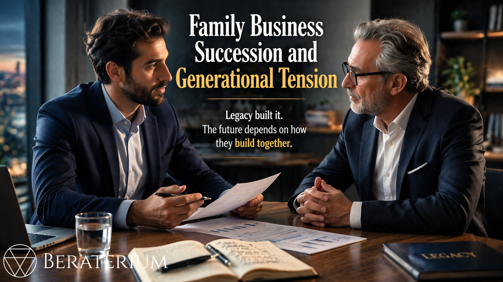
KMUFamiliennachfolge und Generationskonflikt: Was nach der formalen Übergabe alles schiefgehen kann
Viele Konflikte nach der Nachfolge sitzen nicht im Gesellschaftsvertrag, sondern in Rollen, Identität und unklarer Führung – das ist ein…
Weiterlesen → -
Startup
Gesundheit als Unternehmensrisiko: Körper, Team und die kleinen Stellschrauben
Wer nur auf Prozesse und Technik schaut, übersieht oft das größte operative Risiko: ausfallende oder erschöpfte Menschen.
Weiterlesen → -
Startup
Auslandsgründung strategisch angehen: Risiken, Standortwahl und klare Entscheidungen
Auslandsgründung ist kein Steuertrick, sondern eine strategische Unternehmensentscheidung.
Weiterlesen → -
 HR & Kultur
HR & KulturIran-Krise und die Straße von Hormuz: Warum „betrifft mich nicht" die teuerste Lüge für Unternehmer ist
Die Straße von Hormuz ist blockiert – und damit 20–30 % des weltweiten Öl- und Gastransports. Das ist kein Planspiel, das passiert jetzt.
Weiterlesen → -
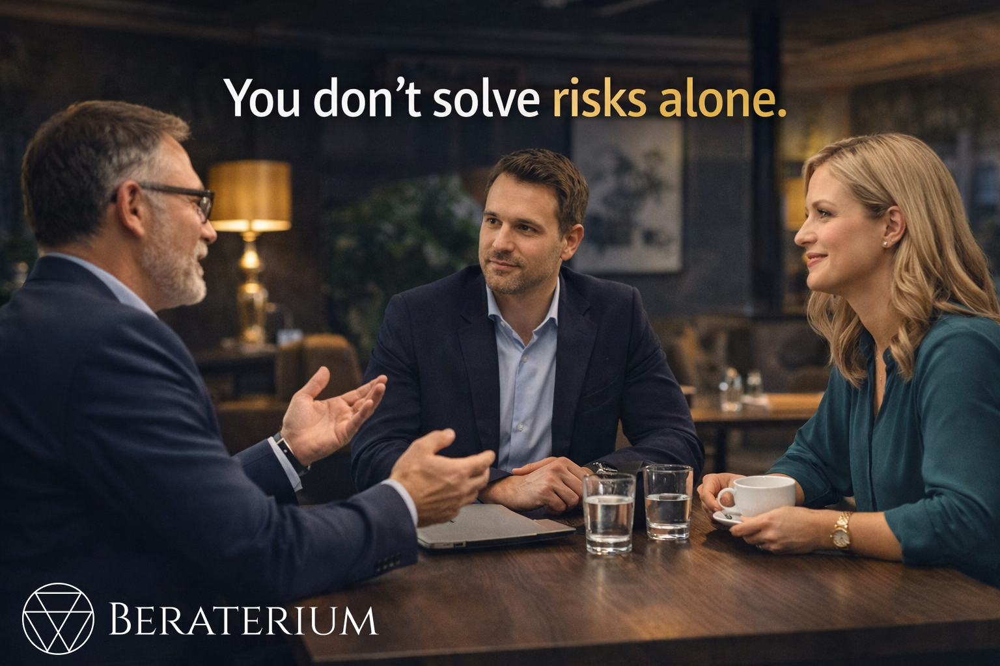
StartupCommunity Risikoradar: Warum Risiken nicht alleine gelöst werden – und was unser geschlossener Expertenclub anders macht
Risiken finden ist das eine – sie lösen das andere. Für wirksame Maßnahmen braucht es mehr als einen einzelnen Berater: Es braucht…
Weiterlesen → -
 HR & Kultur
HR & KulturMitarbeitersensibilisierung und risikobewusste Kultur: Mehr als Zertifikate an der Wand
Certificates aren’t enough: open error culture, risk-driven training, and “safety in dialogue” – how to get employee risk awareness right for…
Weiterlesen → -
 HR & Kultur
HR & KulturGeistiges Eigentum und Patentschutz: Was du schützen kannst – und was du nicht kannst
Patente und Marken gelten nur dort, wo du sie anmeldest. Wer nur in Deutschland oder der EU schützt, kann in China oder den USA von anderen…
Weiterlesen → -
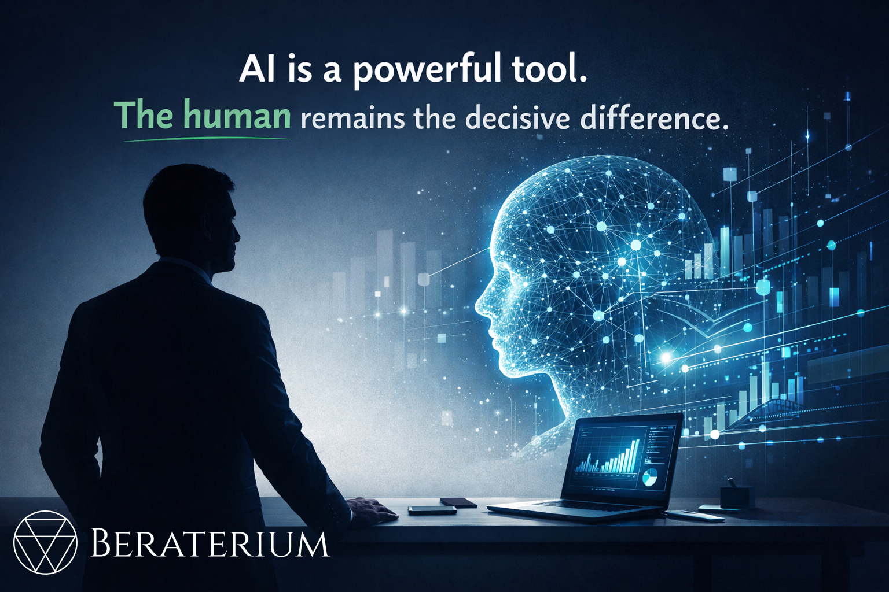
HR & KulturKI und Risikomanagement: Warum der Mensch der entscheidende Faktor bleibt
AI is a powerful tool – but risks arise where humans and AI aren’t thought through together. How to handle AI risks and stay in control.
Weiterlesen → -
KMU
Sicherheit im Unternehmen: Wenn der Mensch zum größten Risiko wird
Priorisiere nach Kritikalität, nicht Wert: Das 120-Tonnen-Edelstahllager kann offen stehen – aber die 5.000-Euro-Spezialwerkzeuge mit 3 Wochen…
Weiterlesen → -
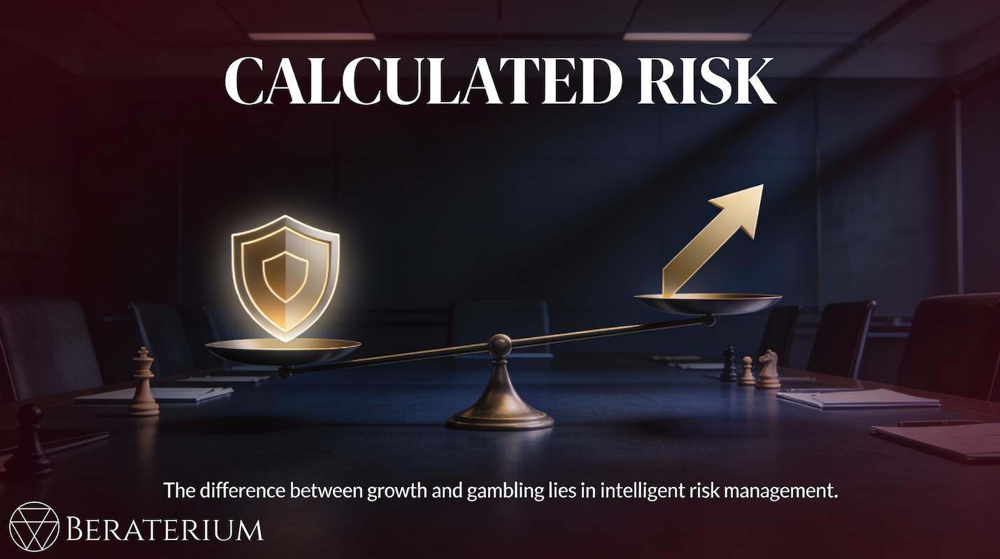
StartupWarum Unternehmer kalkulierte Risiken eingehen müssen – Und wie sie es richtig tun!
Wachstum ohne Risiken ist unmöglich – Doch 80% der deutschen Startups scheitern in 3 Jahren, weil sie Risiken nicht verstanden haben, nicht weil…
Weiterlesen → -
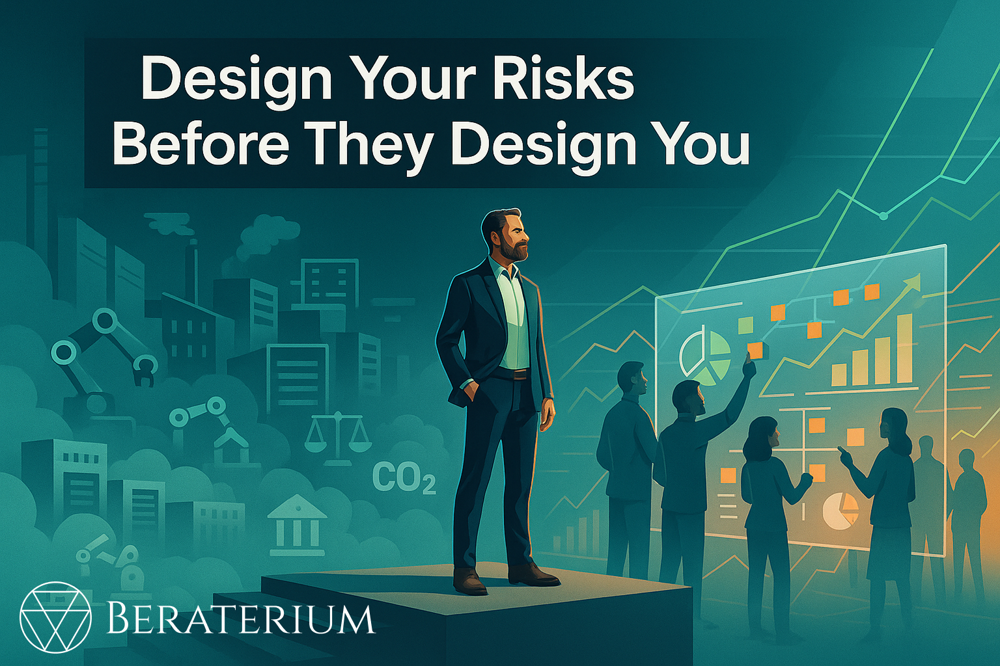
HR & KulturÜbernimm die Kontrolle über deine Risiken, bevor sie dich kontrollieren!
Risiko ist kein Monster, sondern ein ständiger Begleiter deines Unternehmertums – und genau darin liegt seine strategische Kraft, wenn du es…
Weiterlesen → -
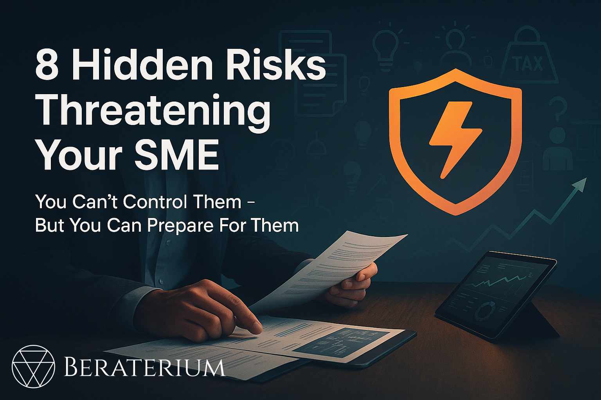
KMUExterne Risikofaktoren für KMU: 8 Einflussfaktoren, die Ihr Unternehmen bedrohen
Externe Risikofaktoren bedrohen Dein KMU mehr denn je. Energiepreise, Steuerlast, Regulierung & Fachkräftemangel – praktische Strategien zur…
Weiterlesen → -
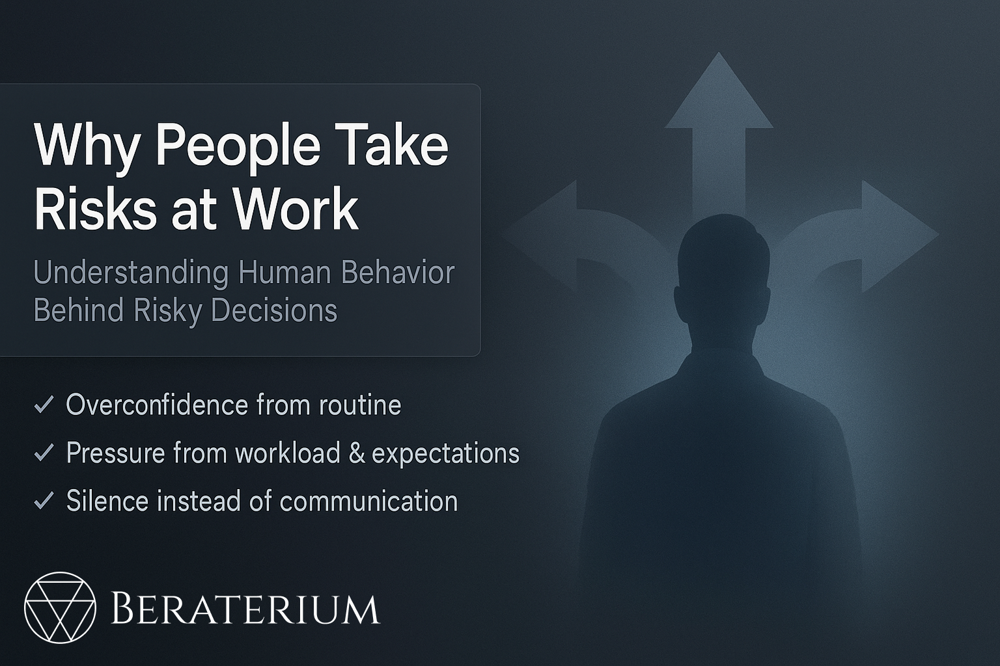
KMUDie wahren Gründe für riskantes Verhalten im Unternehmen – das müssen KMU wissen, um Ausfälle zu vermeiden
Warum treffen Mitarbeitende riskante Entscheidungen – selbst wenn sie die möglichen Folgen kennen? In vielen kleinen und mittelständischen…
Weiterlesen → -
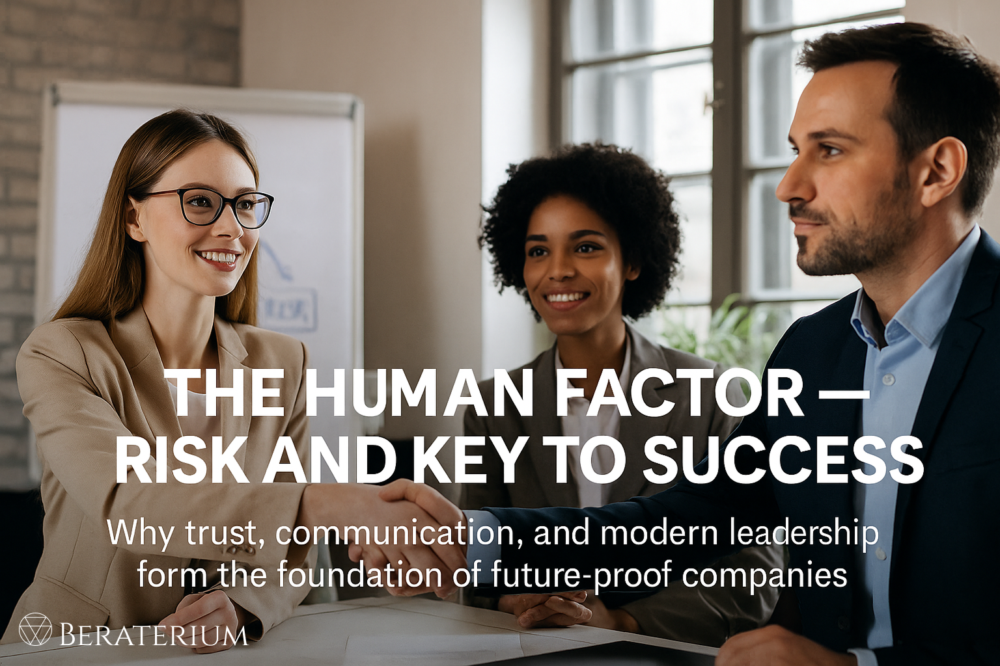
HR & KulturDer Mensch als Risiko und Schlüssel zum Erfolg
Der Artikel zeigt, warum Menschen im Unternehmen gleichzeitig das größte Risiko und die wichtigste Ressource sind. Technik, Prozesse und Regeln…
Weiterlesen → -
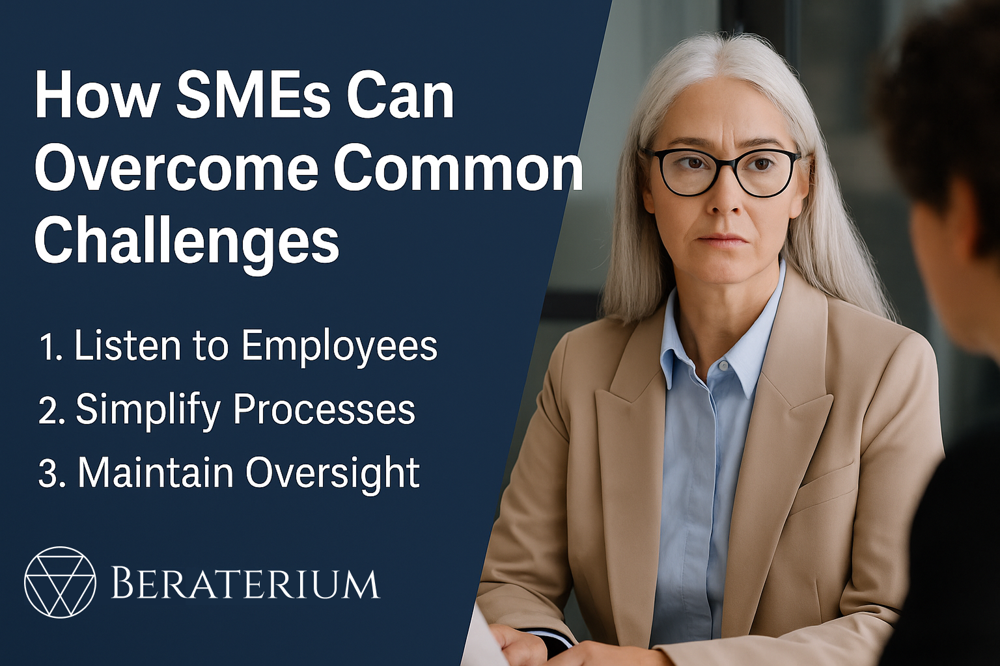
KMUMittelstand zwischen Routine und Risiko - Warum Fokus und Kommunikation über Zukunftsfähigkeit entscheiden
Der Mittelstand gilt als Rückgrat der Wirtschaft – doch viele Unternehmen geraten zwischen Routine und Risiko ins Straucheln. Statt strategisch zu…
Weiterlesen → -
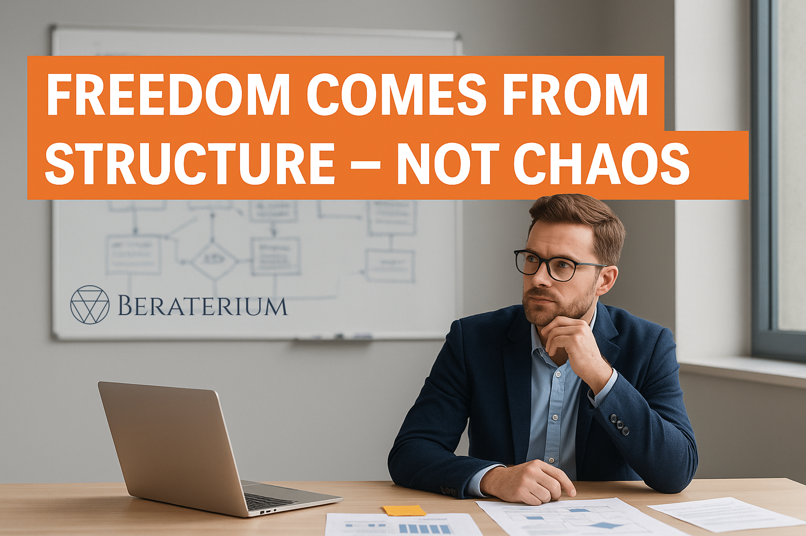
StartupStartups zwischen Aufbruch und Überforderung – Warum Struktur kein Widerspruch zu Wachstum ist
Most startups don’t fail because of bad ideas – they fail because of missing structure. Unclear roles, micromanagement, and poor cash flow slow…
Weiterlesen → -
 HR & Kultur
HR & KulturWas ist eigentlich Risikomanagement?
Risk management is more than avoiding losses – it’s the art of identifying uncertainty, assessing it, and taking control of it. This article…
Weiterlesen → -
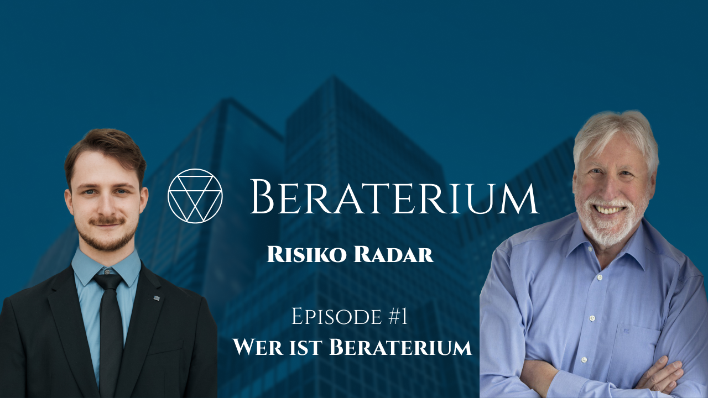
HR & KulturRisiko Radar Episode 1 – Wer ist Beraterium?
In der ersten Episode des Podcasts **„Risiko Radar“** stellen **Till Blania** und **Peter Münstermann** die Idee hinter **Beraterium** vor:…
Weiterlesen →
Kein Risiko-Wissen verpassen
Ein kompakter Impuls pro Monat – praxisnah, kostenlos, jederzeit abbestellbar.